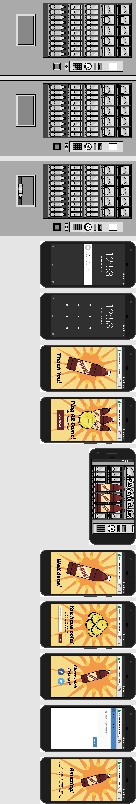

Creating positive user experiences for audiences of proximity marketing and pervasive advertising
What synergistic combination of emergent and social technology creates optimal customer engagement with consumer brands within the physical retail space?
Masters Thesis
– September 2018
Andrew Keats
– w1663560MSc Interaction Design & Computing
w1663560@my.westminster.ac.uk
Supervisor: Ashif Tejani
Table of Contents
Abstract
Abstract goes here
Introduction
Our physical and digital environments are becoming more & more overcrowded with advertising; increasingly, the intended audience is acclimated to the noise of current forms of advertising media. The question for future advertising, is how to create more captivating interactions that stand-out from the competition while delivering deeper relationships between user & brand? In the near future, the overlapping concepts of Proximity Marketing and Pervasive Advertising are likely to converge in ways that create context aware interactions, triggered by the user’s location which are able to provide richer engagement with the user; by leveraging data that is not available to traditional forms of advertising, like personal data or environmental data the new forms of interactive physical advertising will be able to connect with their audience to a degree greater than ever before. Up until now, only online advertising has been able to take advantage of contextual data and user data to deliver more relevant advertising to the user; the advent of the Internet of Things, which promises to lead to ubiquitous computing, creates a paradigm shift where all sort of objects and locations will be online and connected to data sources. With this new found power, the interaction between the physical space and people needs to be well executed lest it invoke negative reactions from consumers, that is to say users may not feel comfortable with these new experiences should they appear to infringe on privacy. What will be needed is a well balanced approach to instigating these new interactive experiences and requesting consensual use of personal data. All that being said, the purpose of this study has been to create a series of interactive adverts that test audience perceptions to novel forms of advertising. Of course there are limitations as to what can be tested in one study, so these advertising experiences were built around a core premise, that an Internet of Things enabled physical space would be the trigger point for an advertisement that would be launched on a user’s smartphone. The other technologies that were being explored in the study were Social Media, Augmented Reality and a form of Digital Reward. Seven variations were constructed based on the control experiment and all eight experiments were presented to participants of the study over course of ten days such that they were able to compare and contrast the experiences. The user experience experiments were conducted in a fictional context, using a mocked environment which had been set up within some hired office space, with users sourced through online community forums and from local businesses. Once the data had been gathered, the data was analysed in various ways in an attempt derive conclusive evidence as to which type of advertisment would be most effective and for which demographic of the population. What follows is a documentation of the work involved creating the content, running the user experience studay, and the results it delivered.
Literature Review
The facet of daily life this project aims to examine and expand upon is that of the interface between marketeer and consumer. With the rise of the web, e-commerce, social-media and online advertising the way users would interact with the products and services was re-imagined (Mangold and Faulds, 2009, p357–365). As Mangold and Faulds explore in their paper, there is now a more public relationship that has become more bi-directional than weighted towards the brand just broadcasting.
The convergence of technologies has often had the ability to transform the way we live and like the impact of the smartphone, the Internet of Things is set to trigger a paradigm shift that will transform they way we interact with the world around us; this future digital connectedness is set to re-invent advertising (Krumm, 2011, p66–73). Like the 2011 Pervasive Computing article by Krumm suggests, advertising could be the ‘killer app’ for ubiquitous computing this century, helping induce the roll-out of infrastructure.
For over a decade the potential for a digitally connected environment has been considered a reality with the use of low cost radio technology (Riekki et al., 2006, p40–46). However, it is only in recent years that it has become truly viable thanks to improvements in technology, such as telecommunications infrastructure and low-energy computing power like BLE (Kallas, 2016).
The experience of engagement between consumer and provider has become more and more important as our post-industrial society has developed, the product or service itself is not the only differentiator, now the relationship between the two parties is also prized as a means of ensuring repeat business from customers (II and Gilmore, 1998). As ‘Welcome to the Experience Economy’ points out, the experience a brand provides the end consumer is increasingly the focus of the relationship.
Lastly, brand loyalty is a somewhat intangible target that businesses aim for to secure future success and new technology will attempt to improve for businesses (Kowalewski et al., 2017)( Making blockchain real for customer loyalty programs | deloitte us, no date), allowing them to better track loyalty and its impact on their business. Further to this, solutions that utilise a mixture of technology will be able to create a more engaging experience for the customer (Scholz and Smith, 2016, p149–161) and even create experiences that reward the user for their participation (Ramos, 2016).
Methodology
The methodology for this project can be broken down into X major tenets of this kind of study. These are: Research; User Experience Study Design; Preparatory Implementation; User Experience Research; Data Analysis; and finally Interpretation of Results. The initial phase was one of research into prior work with regard to academic study but also existing technology (both software and hardware) pertinent to the project. Once the first phase was complete, research did not entirely stop but continued to inform the implementation stage which was made of many parts, given the complex nature of a multi-faceted project of this nature. In conjunction with the technical research there was a requirement to consider the overall design of the experiment and how the user research was to be conducted. Upon approaching completion of creating all the necessary software, visual content and configurations in order to conduct the research, it was time to invite potential testers to take part in the study. After a minimum sample size has been reached it was then possible to process the data in order to be able to later discern meaningful findings from the experiments. Naturally, interpretation of the results is the last phase which has been a matter of taking a second look at the quantitative data in conjunction with the qualitative feedback in order to posit not only where the most successful experiments but also to discuss room for improvement.
Research
Preliminary research was not only a way to provide a framework of context for the project but it was also essential to making appropriate technical design decisions.
Literature survey
Supporting secondary data was acquired through university library resources and search features as well as Google Scholar; external providers of research papers such as Springer, IEEE and ACM was used to gather relevant papers. Other relevant material was collected when it was extremely pertinent to the project and insufficient academic content existed; examples of these kinds of sources are online publications, blogs, company websites and corporate whitepapers and case studies. Where possible long form literature such as books will be sourced but given the bleeding-edge nature of the project most artefacts will be journal articles and research papers or online sources. All secondary research was be collated and categorised with a reference manager (RefWorks) in order to help organise the body of research and search through the contents. These secondary sources were used to inform and frame the user testing, analysis and findings.
Technical research
Given the scope of the project, it was not possible to deliver the project in the given time frame without taking advantage of third party libraries; the intent is to investigate the relevant open-source libraries that are suitable to assist in realising the implementation. This research is documented below, with justifications provided for the libraries and any other software chosen for inclusion in the project. Hardware research is also covered.
!! TODO: Add more info here about technologies used…
Design of the Study
The study was designed to fulfil the criteria of comparing and contrasting various location sensitive mobile advertisements that had a bedrock of an Internet of Things device prompting the launch of web content on a smartphone with one control experiment used various combinations of Augmented Reality (AR), Social Media, and Digital Rewards. It was also necessary to consider at this early stage what the baseline experience would be, and given that email capture is a common experience among users exposed to advertising and marketing material, this seemed an appropriate yet simple interaction to use as the control. To satisfy the idea of having explored enough permutations, it was important to consider what was the minimum number of experiments could be created in order to have at least one experiment to cover any given combination of the previously listed technologies. This is important to point out because when the order of advertisement composition is given more emphasis the potential number of combinations increases dramatically; given the time constraints, where more than one technology was combined on top of the the control experiment, only one ordering was selected, using an approximate heuristic: the Social Media element would come last when combined with anything else; the Augmented Reality game experience would come first; when the Digital Reward was present along side Augmented Reality, the view before entering the game would mention the chance of gaining Digital Reward after completion of the game. It would be naive to suggest that other ways to combining these elements would not have the potential to produce other results and this is an area where the study could be scaled to be more thorough, time permitting.
Experiment list
Below is a table defining the composition of the eight experiments created in order to show the combination of aforementioned technologies. The first experiment was the control baseline experiment and the number attributed to the various combinations was used internally throughout the study and will therefore be used when describing the feedback and results.
Table 1: List of experiments and their composite elements.
Experiment
Alias ID
IoT Beacon
Interactive AR
Blockchain Reward
Social Media
1
iotb-x-x-x
✔️
2
iotb-iar-x-x
✔️
✔️
3
iotb-br-x-x
✔️
✔️
4
iotb-sm-x-x
✔️
✔️
5
iotb-iar-br-x
✔️
✔️
✔️
6
iotb-iar-sm-x
✔️
✔️
✔️
7
iotb-br-sm-x
✔️
✔️
✔️
8
iotb-iar-br-sm
✔️
✔️
✔️
✔️
Designing Out Bias
Thanks to the instruction of a mentor, thought was given to a potential issue with the feedback which could then be mitigated. The risk was that should every participant undertake the experiments in the same order, then that repetition would introduce a bias into the results that would otherwise not be present. The rationale behind this was that the users would inevitably become more familiar with the experiences as a whole as they continued from one advert variant to another; in addition to this, there was a likelihood that the users might start to tire towards the end of their overall session. These two factors could have potentially cause the overall results to unfairly favour the experiments in the middle of the group. The solution to reducing the risk of bias was to ensure that the order in which the participants interacted with the experiment was randomised, though the decision was made to keep the control experiment at the beginning as its relative simplicity made it most suitable to introduce the users to the concept. At this point no implementation details had been considered in depth but it was prudent to devise this strategy.
Implementation
The implementation phase constituted a significant portion of the study and was composed of following distinct efforts.
User Experience Design
Visual Designs
Prototype Server Development
Test Runner Development
User Experience Design
The User Experience design work was in two parts. Firstly is was important to create a Persona as a bedrock for the rest of the work. Secondly, wireframes were created to visually describe the user journey for each of the advertisement variations; it was at this stage that some critical decisions were made about the user experience, which ultimately shaped the study.
Persona creation
One core concept of User Experience Design is the Persona which was helpful in creating the rest of the work. The Persona, being a fictional yet believable for the experience being developed allows the design and development of software and experiences without designing just for one person. While in this case only one Persona was created, the aim was to encapsulate in this fictional character the optimal qualities that it was supposed the perfect candidate for the advertisements would possess. There is a little bit of creative guess work involved in this stage, especially when creating a persona from scratch without having previous user research, from an earlier iteration to work with. Preferably, this kind of User Experience Research is continuous and iterative, changing and refining the understanding of the potential users.
The persona creation made use of a previously created template, that was re-used to create a brand new character to build the projects around. The sorts of traits you can see described in the persona are all that would make this person, were they real, potentially very receptive to novel forms of advertising instigated by an Internet of Things (IoT) enabled device. Melanie Thompson, as the persona was dubbed, was made to be a an adopter of mobile contactless payments, regular player of games (on consoles and smartphone), and a frequent sharer of personal experiences on Social Media; She was also designed to be keen on saving money or getting money back from existing loyalty schemes. A royalty free image was used to give the persona a face and all of the imagined personality was composited using LibreOffice Draw (an open-source alternative to Microsoft PowerPoint).
!! insert persona image
Wireframes
The Wireframes were created in Lean UX manner, though using online software called Figma to allow for a degree of fidelity while creating reference material to work against. These wireframes were created within the context of each other experiment in order to scrutinise the difference between the user journeys; it’s also worth noting that for the purpose of the user experience study, the design iterations were effectively created in parallel; in taking this approach, there was some discretionary design decisions at this stage that led to user interfaces that were not necessarily reflective of how a real-world example might be executed. For clarity, in order to look at user perceptions of the composition each experiment, the user journeys were designed to force the participants of the study to go down a particular path; this was justified as a design choice because among the the entirety of the experiments were permutations, that covered the other scenarios.
The choice of Figma as the wireframing tool was ultimately down to three compelling qualities: The software is accessible both in Desktop and Web form meaning it’s easy to continue work from one device to another; Figma has an easy-to-user, comprehensive feature set, including some very strong vector design tools (comparable with other market leaders in the UX Design space), reusable components, and clickable prototypes; It also has a feature complete student offering for free.
One of the most significant design decisions made at this point in the project was to define the initial context of the experience as a vending machine. The experiments were intended to explore the various combinations of technology - as previously mentioned IoT, Social Media, Augmented Reality, and Digital Rewards - rather than comparing different starting contexts; it’s worth recognising that, it’s very likely that a different starting point for the scenarios would lead to different participant feedback due to the participant assumptions based on the initial context. That is to say that while the choice of vending machine was intended to create a plausible situation for a contactless payment that also led to an IoT triggered advertisement on the smartphone, different people load the context with different contextual backstories; the assumed location of the vending machine was left to the individual, so while some might have imagined a more social surrounding like a canteen, others could and in fact did, imagine situations where the vending machine was in a more high footfall location. The personally envisaged place in which the advertisement is triggered undoubtedly influenced the individuals’ perceptions of the experience, especially with regards to how much time they might have to spare or how transient that experience might normally be.
Another peculiarity of the UX designs that might have had some unforeseen consequences, was to begin and end every advert variant with the same opening and closing screens. Each experiment launched from the IoT device landed on a view that messaged to the user “Thank You” and they ended with a view stating “Amazing”, with the intent that these elements would help signify the beginning and end of the individual advertising experiences. This may have been an unnecessary distraction for some participants, not least because over the course of the experiments, this repetition seemed to have the side-effect of mesmerising some participants, causing them to ‘zone-out’.
!! insert annotated wireframes
Visual Designs
The Visual Designs are distinct from the UX work because they were created as part of building the mock advertising that the participants were to experience, as opposed to working documents. These design fall into two categories, those that were largely ad-hoc based on the UX wireframes for the mobile screens, and those that were necessary to create the background scenario.
Mobile Screen Designs
The mobile phone screen designs were largely influenced by the UX wireframes, and were designed in the browser as part of the development process; this lean approach enabled a faster development process and allowed for more effort to be focused on elements absent from the wireframes. Designing in the browser enabled more time to address the transition effects between the views/stages of the adverts, as well as the animations belonging to a given view. The content utilised HTML 5, CSS and JavaScript, so the animations made heavy use of CSS animations and transitions coupled with JavaScript to trigger the view state changes. The content was designed for exclusively for mobile given the limited time frame and the scope of the experiment being smartphone centric; further design and development would look to target larger handheld devices such as tablet which might also be used if to hand in a real-world situation. Designing for Laptop or Desktop was largely pointless and therefore excluded.
Building the Brand
Beyond just creating passable advertising material, it became apparent that for the experiments to run as smoothly as possible, trying to create experiences as true to life as possible was worth attempting. To that end, despite the artificial surroundings of the office space from which the User Research was conducted, the experience could simulate reality by building a convincing (yet imaginary) soft drink brand to provide a more concrete framework of context. Consequently extra work went into fleshing out the idea of the ‘Fave’ soft drink brand that was already partially nascent in the wireframes. The main drawback with this is that a brand of consumable product is rarely universally accepted, especially if it doesn’t have an extremely high level of utility. So, as the qualitative feedback will attest, developing a more defined visual aesthetic and brand tone, probably induced some negative reception for some even if it also had a net positive effect; it’s hard to say whether changes would be made to this aspect of the experiments were the experiments to be recreated, given the requirement of some form of attachment to the commodity being tested as part of the study.
In terms of actual artwork that was created as part of building ‘Fave’, the fictional soft-drink brand, there was the creation of a ‘Fave’ branded vending machine, a 3D mesh of a ‘Fave’ bottle, and a custom bottle label.
Fave Bottle and Label
The ‘Fave’ bottle was the first visual asset to be created as it was integral to the more conventional views constituting the various adverts as well as being a major part of the proof-of-concept Augmented Reality game experience. Further to this, to make a convincing brand, the bottle needed to have a label that looked sufficiently like a genuine commercial product; a flat render of the 3D bottle with wrapped label was used as part of the two-dimensional views, while a 3D mesh was created for use in the Augmented Reality part coupled with the re-use of the label as a texture. The creation of the label was almost entirely done in Adobe Photoshop, using guidelines from the Figma UX designs. The creation of the bottle was a more elaborate effort as it was initially easier to create the mesh using 3DS Max but the bottle required converting into the correct file format using Blender.
Fave Vending Machine
The ‘Fave’ branded vending machine, was created to help participants momentarily live within the devised scenario as though it were real; the caveat being that what was presented to the user was actually a one metre wide, two metre tall banner with the front facade of a vending machine. Not only was it important that the image on the banner conveyed the brand but another focus on the artwork was to suggest through the design that this vending machine would accept contactless payments. The notion of the user touching their phone to the vending machine in order to pay was a critical part of the entry into the rest of the experiences and with that in mind, this point of contact was designed to stand out visually against the rest of the design. One last element that made up the final look of the vending machine was an AR (Augmented Reality) marker, as a late addition due to workflow requirements and was attached to the banner with adhesive tape. This marker asset was designed to use the ‘Fave’ branding, which may not have helped with the intuitiveness of its function among some users and in hindsight, exploring other options might improve experiment experiences for the testers.
Development
Development of the project experiments involved two elements that directly interacted with together by way of the test users, and another piece of software was written in order to conduct the experiments. For the sake of familiarity and its strength as a language for quick prototyping, every single bit of software written for this project used JavaScript; strictly speaking whenever the NodeJS runtime was being used, then the codebase took advantage of a popular superset of JavaScript called TypeScript (open source and invented at Microsoft by Anders Hejlsberg, one of the creators of C#). Using TypeScript was a design decision because of pre-existing familiarity with the Technology and the benefit of type safety that it adds to JavaScript; ultimately, the TypeScript code is resolved to JavaScript by the ‘transpiler’. All code was backed up to GitHub throughout the development process to safeguard against data loss. WebStorm was the IDE of choice when working with NodeJS while a special Espruino IDE was also required, when working with the IoT beacon.
IoT Beacon Setup
Hot beacons were bought for the sole purpose of transmitting an Eddystone URL to the smartphone. Using Eddystone URL technology had a key benefit for prototyping over other forms of Bluetooth Low Engender (BLE) protocols, specifically this is that other options require some for of beacon registration with a centralised service like the one operated by Google; conversely, the Eddystone URL format allow the developer to broadcast a static URL directly from the device rather than being indirectly resolved through the third-party service. For the sake of redundancy, in case there was a failure with an IoT beacon that couldn’t be quickly fixed, multiple devices were purchased. Two of the beacons were of a typical specification and setup involving a password and the use of a smartphone app to edit the beacon configuration, including the URL it broadcasts. A third device was purchase that can be considered a more generalised IoT and sensor device that happens to include BLE hardware; it was this device, called a PuckJS that is built to run JavaScript from firmware which gets pushed to the microcontroller from the Espruino IDE. In this case, the URL was hard-coded as part of the small program written to initialised the BLE features of the device. With both types of beacon, the Eddystone URL protocol requires a string length no longer than character aside from the URL scheme, meaning that a URL shortening service was required, for the sake of redirecting to the long-form URL address for the adverts. For the sake of concentrating on the user research study, a third party URL shortening service was used, hosted by Google but in theory an independent entity could host their own shortening service. Further research into the nature of the broadcasting signal would be of interest were this project extended, as will be described under the section documenting the actual user research. One final point to mention is that the shortened URL given to the beacons to broadcast were set up to resolve to a static redirect endpoint that was built into the Experiment Server, the reason for which will also become clearer as the methodology explained further.
Experiment Server
The different advertisements were all build using a shared codebase with the intent of being hosted on the same server, using the Express HTTP library on top of the NodeJS runtime. The CSS styling was mostly written in a technology called SCSS to aid in code re-use when designing and developing the animations and transitions. The HTML was generated using a form of server-side templating technology called EJS which was picked for its simplicity as a framework and in turn the relative rapidity of development. Client-side JavaScript was created to simulate button and form interactions as well as a few time delayed animations; these files were hosted separately from any server-side JavaScript logic which was mostly used for URL routing and a small amount of persistent server-side state. The routing logic was no more complicated than it needed to be, with a homepage just for the ease of manually accessing the experiment URLs, then routing to each of the experiments and lastly a simple redirect endpoint as well as another endpoint that acted as entry point for the mechanism that set which URL the redirect endpoint would point to. To clarify, the most complicated internal workings of the server were exposed by a GET HTTP request that would update which experiment would be accessed from the static redirect URL; this is a very insecure method of accomplishing this outcome but was justified since no sensitive data is permanently stored on the server. That being said, if any of this codebase were to be adapted for a production environment, this would be one of the first thing to have to change. No database technology was required to deliver any of the experiences but is was possible to add a user’s email address to the server when updating the redirect value, reasons for which will be explained under the user research methodology.
Initially the idea was to run the whole experiment with local servers on a local network conducting the experiment in a closed environment over Wi-Fi. This was mistakenly in the attempt to keep things simple. One technical issue caused this strategy to be changed however and that turned out to be the requirement for web browsers to only offer user consented web-cam over the HTTPS protocol; prior to finding this out during the development stage everything was running over HTTP. The reason for requiring access to the web-cam may not seem obvious but any Augmented Reality experience makes use of a camera as well as superimposed content. So, once work began on the AR scene, this requirement presented itself and a quick and simple solution was sourced, in the form of free Heroku hosting of the web-server codebase; the decision to go with Heroku was made because of ease of deployment and automatic HTTPS configuration, in addition to the basic hosting being free. Like some of the other choices made to deliver these experiments, this would probably not translate into a production choice but a quick and easy option that meant more time could be spent working on the AR game content.
Augmented Reality Game
The AR game was more a proof-of-concept, to illustrate the potential for this experience to be presented over the web to a mobile device and demonstrate the prospective impact this technology could have on interactive advertising. Given the main goal didn’t focus on gameplay or performance, this led to some experiential issues that would ideally be resolved were the experiment to be rebuilt for an improved iteration. To that end, the whole Augmented Reality element would probably be revisited without the use of A-Frame (a technology developed by Mozilla to enable easy construction of 3D scenes) because in conjunction with spatial recognition via the web-cam, this could become a clunky experience at times; it’s also relevant that the mobile device used was a 2014 model Samsung, so it’s likely a new phone used for testing would have improved the latency in processing the scene. The kernel of the AR game idea was that the user would be able to play a tune on three bottles of ‘Fave’ soft-drink with staggered levels of drink within the bottles, to indicate different notes created by the different bottles. The AR game would to play the user a three note melody (while enlarging the bottle that was currently being ‘played’) and the user was meant to repeat the pattern. The presentation of the bottles would be triggered by the program identifying the previously mentioned AR marker through the camera, such that the bottles would float in front of the vending machine. The stretch goal of the game element was to enable the microphone as well it create some form of directional blowing over the bottles to imitate actually blowing over the tops of bottles; this was de-scoped quite soon given a significant technical issue that was to arise. The use of third-party libraries (as well as A-Frame, a library called ARJS was used to support the Augmented Reality features) made it difficult to fix an issue to do with the 3D spatial mappings between the web-cam and the 3D objects; while the bottles would render without issue, there was an issue with targeting bottles with click events, though this was not an issue when test on a PC, only mobile devices. The AR element was consequently made simpler to ensure some form of interactivity as a challenge but mitigating for the inability for individual bottles to be targeted; with that in mind the solution was that any click on the screen after the tune had completed would replay the tune. With more time, this part of the experience could certainly be improved but the best was made of the situation.
Command Line Test Runner
One last piece of bespoke software that needs to be discussed is the Command Line Test Runner. This was also written in TypeScript in order to be run from NodeJS. The purpose of this application was to facilitate the running of the experiments with the individual participants. This application relied on a console like Command Line Interface (CLI) that would do a variety of things to fulfil the design of the study; the console style functionality took advantage of a NodeJS library called Vorpal, in order to allow an easy way to create a persistent CLI instead of just a script that would run once before exiting the JavaScript runtime. One key function this application is able to do is create a pseudo random sequence of numbers based on an email address provided by a participant of the study; using a third-party NodeJS library called Chance, the Test Runner is able to leverage the Mersenne Twister algorithm to create a repeatable but seemingly random set of values; this functionality was critical in satisfying the randomisation of the order in which the users would experience the advertising experiments. The participants’ email address and number sequence was able to be saved off as a JSON file for the purpose of not only anonymising the feedback dataset but also to re-order the individual user feedback so the feedback could be correctly compared between the participants. In addition to generating the pseudo-random numbers and saving that data for processing, the CLI was able to interact with the Experiment Server by making the requisite HTTP requests to the server in order to switch which experiment would then be used by the static redirect URL; it was able to do this so it was relatively painless to cycle through the experiments with a customised sequence for every new user. All of the functionality built into this application made the running of the experiments much easier than would have possible otherwise, even to the extent that with two devices running the CLI it was actually possible have two participants engaging with the study at the same time, alternating between which of their sequences were active.
User Experience Research
The methodology for the User Experience Research can be seen as two parts: - Preparatory Work - Conducting the User Research
Preparatory work
The preparatory work as described in the following passages explains greater detail how: potential participants for the study were engaged with; how those potential candidates for taking part in the study were converted into actual participants of the research; what measure were taken to gain consent from participants to ensure their feedback was usable as part of the analysis.
Gathering Interested Parties
Once the experiments were collectively nearing a state of readiness for users to test, a more active effort was made to reach out to the local community. The office space from which the study was being conducting was located in a business park in Peckham, South East London and that in itself provided a pool of potential experiment testers; the majority of people in the business park run their own independent business so it would have been naive to assume that most people would be able to take part, though in the end about a quarter of the study was made up of people from this group. One other ways the users were sourced were various Facebook community groups, specifically covering the Surrey Quays, New Cross, Peckham and Deptford areas. As well as those options another resource was the neighbourhood community social network called Nextdoor.
Ethics and Consent
When looking to find interested member of the public online or in person, as well as continuing with further correspondence the users were assessed to be: adults; of sound enough mind and not to be considered vulnerable in any way. Potential participants were given sufficient information before attending the study to have some understanding of what might be involved and once the were ready to go forward, the experiments were discussed in comprehensive detail before the potential participants were asked for their consent to proceed with them as testers of the experiences. The consent form went into written detail about the experiments which had be verbally described, as well as provided opt-in options for their likenesses to be capture in photos or video. At the end of the experiment there was a further consent form so that each participant could reflect on what they had been asked to do and choose whether or not their feedback should be used as part of the study. Additionally, the participants had the option to request the data analysis derived from the collective (and anonymised) feedback. One last point of note is that the consent forms were integrated into the Google Forms (hosted on the University G Suite offering) feedback questionnaire that was used to gather the users responses to the experiments; this has the benefit of supplying all relevant persons one document for evaluation or to fill in.
Incentivisation
Part of gathering interest from members of the public to take part in the study was to offer a small to moderate recompense for their time and effort. As such, every participant was provided with a £20 Amazon voucher - via email - for their contribution. Some participants were not interested in the voucher and simply intrigued in what the experiments might be like but the decision was made that unless a user were to insist on not receiving a voucher, all would be treated equally. Once that was explained to the experiment testers, no-one refused the voucher.
Conducting the User Research
During the practical part of the user research study, a fictional scenario was described to each user whereby the premise of the interactions started off with the user wishing to purchase their favourite drink from a vending machine; as the situation was devised to involve mobile adverts triggered by a smartphone contactless payment, this was also explained. In accordance with the experiments involving a smartphone, the users were provided with a smartphone for the testing session; importantly, the smartphone was one running Android OS, which was necessary to take advantage of BLE beacon recognition at the operating system level. The fact that the Android operating system can pick up transmissions from BLE devices was a feature necessary in order for the user to be able to view an on-screen notification which was essentially a link to the advertising material. Aside from this technical detail, the only other information was given to users with regard to the smartphone was how dismiss the lock-screen. No other guidance was provided to participants with regards to the experiment in order that they could be observed as impartially as possible when interacting with each user journey.
Validity of Research
In order to ensure that the data gathered was not skewed based on any learnt behaviour across the experiments, the order in which the experiments were randomised thanks to the Command Line Test Runner. With this strategy, the results gathered seem to have successfully not been influenced by a bias based on a common, fixed experiment order.
Perhaps another measure that could have improved the quality of the data with regards to the validity of the research might have been to provide more background context for the fictional scenario.
Documentation of the Research
The majority of the data gathered from running the user experience test sessions was obtained through the user feedback form. Some photo observations were taken alongside one video recording. Some ancillary observations were silently noted to see if there were any issues with the experiment that would not be captured from the user feedback itself. As previously mentioned, where possible when two participants were wishing to undertake the experiments at the same time, then this was accommodated; typically one user would take between thirty and sixty minutes to complete an entire test session, while conducting parallel sessions took between fifty and seventy minutes so it was sometimes more suitable, especially if the participants had come along as a pair.
Photo and Video Evidence
Even though most participants were prepared to have their photo taken and be recorded on video, the data gathered in this manner has been relatively sparse. The main reason for this was that the time taken with each user would have increased by at least thirty percent by a rough estimation and the amount of data to process would have been too much to handle given the scope and time-frame of the project. Having said that, User Experience Research principles do tend to promote these complementary methods of data gathering and I would agree that when there is a team involved and/or the amount being tested isn’t quite so large, this is the ideal testing scenario. As an example of the extra depth this data can deliver, the video evidence will be provided as supporting evident and demonstrates not only how it can be useful to record the user interacting with the interfaces but also how it cam be used to gather data in a more thoughtful interview manner where the participant is able to reflect on the experiences more.
User Feedback
For the purpose of efficiently gathering data, this study has relied most heavily on participants answering questions in response to the experience using the University G Suite hosted feedback form. Not only did this format lend itself to rudimentary data gathering of basic demographic data and a little data concerning existing familiarity the technology present in the experiment, it also provided great utility for gathering data and processing it given the need to randomise the experiment orders. The fact is that working with a text based digital format made the task of mapping user feedback to the corresponding experiments much easier than had the task involved transposing additional data from another medium and then having to merge that data into a common dataset of results. This was a conscious design decision based on the requirement to shuffle the experiment order and it was decided to be a reasonable compromise; one crucial reason why this approach was considered acceptable was that users were still able to provided qualitative feedback, albeit having to write it themselves.
The structure of the feedback form was such that after a participant had consented to the study, they were required to enter data regarding their email address, age, and gender. Following on from that basic demographic data gathering was a question used to gather binary data regarding familiarity with: email on smartphones; mobile gaming; mobile payments; and AR experiences.
A print version of the feedback form is available to examine as part of the appendices section but to summarise the design of the feedback form, the majority of the body is a repetition of the same set of questions 8 times; this generalised approach to gathering feedback relating to each experiment made it easy to compare the experiments. This questionnaire structure also removed the technical challenge of asking questions only relevant to a particular experiment experience without having to shuffle the online form; it’s actually not certain that this would have been a feasible option and the option of not using the University G Suite to capture data would have created another set of restrictions. Given these conditions, the way the user feedback was gathered can be considered more than acceptable, given the circumstances.
The sections provided for each experiment provided the opportunity for qualitative feedback as well as qualitative feedback based on some characteristics that could be applied to all experiments:
Enjoyment
Annoyance
Ease of use
Brand connection
Engagement
Persuasiveness
Interest
Each of the characteristics mentioned above (described as ‘facets’ during the analysis) were presented to the user per experiment, with mandatory scalar questions and optional long-form feedback text fields. Using this approach it was possible to capture essential sentiment data but also allowed more willing participants to provide more detailed feedback. In order for the experiment testers to have each test fresh in their mind, they would fill in feedback immediately after completing one experience before going back to interacting with a new advert variant.
After all the feedback sections aimed at individual experiments, there was a summary section, mainly focused on gathering: overall popularity scores; finding out general feedback regarding the elements composing the experiments; and more general feedback regarding the experiments study itself. To help participants identify the experiments at the end when being asked to compare them, they were provided with the wireframes to make is easier to decide their preferences.
Data Analysis
This subsection describes the processes involved after the conducting the practical element of the user research. This is includes the pre-processing of the data making it ready to work with as well as how the qualitative and quantitative data has been treated. Aside from the pre-processing stage, all data analysis involved to use of the language R, via and IDE called R Studio, in order to work on the results.
Data Pre-processing
The data from the online user feedback was easily downloaded from the G Suite service and saved as an Excel file. However, at this stage the data was not ready for analysis because the user feedback for each user was ordered according to the individual’s designated sequence as previously described. In order to resolve this issue, it was necessary to create a create a script to reorder the feedback so that the tabular data had the correct data in each column accounting for the requirement to resort the feedback sequence. Any attempt at undertaking this task manually was ruled out early on when the complexity of the effort involved became apparent. As with other code written, the preference was to write a script in TypeScript to be run as JavaScript through NodeJS; this script took advantage of an existing third=party NodeJS library called ‘xlsx’ that allowed for the data to be easily parsed into a JSON format which was then easily manipulated, resorting the data before saving out an updated Excel format. All in all, this turned out to be a longer task than was anticipated as more and more non-trivial requirements came to light as the data was traversed and transposed. Despite the unforeseen complexity in creating a script to pre-process the dataset, a manual approach would have been more susceptible to human error, whereas the script could be tested and validated iteratively until there was absolute confidence that the output was correct. This script was also used to replace the participant email addresses with an ID to anonymise the data.
Qualitative data
Some qualitative responses were noted down informally as the participants were interacting with the experiments, pausing between experiment to explicitly express an opinion, or at the end of their session with a brief discussion. That being said, the bulk of the qualitative data captured was as part of the user feedback form and this has been the easier to collate as it was easy to extract as part of the data analysis conducted using R Studio. These qualitative sections of the feedback form were designed open ended questions that could elicit long-form answers from the participants. Fundamentally these particular response have formed the latter half of the data analysis document (presented as part of the appendices), without any modification, just some categorisation of the responses; for example, all participant response for a given experiment are grouped together as opposed to grouping all feedback by respondent. Advanced sentiment analysis would have been interesting to attempt but this idea was de-scoped due to time constraints and the already sizeable amount of analysis that had been undertaken.
Quantitative data
That quantitative data was extensively mined and manipulated to explore the possibility of any meaningful patterns of perception using R, in R Studio. Most of the analysis conducted was around the scalar feedback provided framed through the user’s age and gender demographic data. Data gathered around the participants relationship to their mobiles and AR was also capture for further analysis of the results outside of the analysis document. The analysis document was not meant to come to conclusive findings but instead provide ways of looking at the data that could be interpreted within this document as a means of coming to a more definitive summation as part of the Interpretation of Results chapter. The data was distilled so that it could be easily portray in various graphical form, the idea being that it might be possible to determine any strong preference for a given experiment, either universally across all participant or within sub-groups. As is discussed in the analysis document, UK population census data was used where it was appropriate to weight the various age and gender subsets to more properly reflect the population. This was in response to evaluating the spread of participants and when seeing that it was not well aligned to the actual population count. Using the weighting was not always appropriate though as it could only be use where a participants response would normally count as a single unit (like a vote) rather than a relative rating.
Interpretation of Results
As can be seen in the following chapter, the data analysis document has been distilled, with the findings considered to be most pertinent lifted and described in the Results chapter. Next, the Discussion chapter has been used to more conclusively discuss the outcome of the study. It is at this point that the qualitative feedback has also been reflected upon to consider ways the study could have been improved as well as considering the positive feedback and negative concerns raised by the participants. Ultimately, the intent has been to not only address the feasibility of a real-world version of one of more of these forms of advertisement but also look at where this research could be continued.
UX and Design Deliverables
Persona and Wireframes
Persona
Figure 1: User Persona
Wireframes
Figure 2: Wireframes Exp 1
Figure 3: Wireframes Exp 2
Figure 4: Wireframes Exp 3
Figure 5: Wireframes Exp 4
Figure 6: Wireframes Exp 5
Figure 7: Wireframes Exp 6
Figure 8: Wireframes Exp 7
Figure 9: Wireframes Exp 8
Branding Assets
!! present visual designs here (Label, Bottle, Vending Machine, Banner)
Fave Bottle and Label
Figure 10: Fave soft-drink bottle
Figure 11: Fave soft-drink label
Figure 12: Fave soft-drink vending machine design
User Research Results
This chapter provides a selection of data presentations, be that in tabular form, graphical representation or both. The assessment of the quantitative data spans over 50 sides of A4 and the aggregation of qualitative data is a similar length, so it’s impractical to present all the data in this chapter. The entire set of data evaluation can be found as part of the appendices. This chapter will concentrate on the ways that the data was examined that are most significant to dissertation, with regard to best possible outcomes.
Basic Participant Data
What follows is some minimal demographic information about the 23 participants that made up the group of experiment testers, as well as some information concerning their experience with technology relevant to the study.
There participants were mostly male be a ratio of about 3:2, the younger age groups were better represented, however the gender disparity was greater among those younger age groups with a stronger male representation for those under 35 (about 5:2). This was down to the participants that were able to take part.
Table 2: Gender Demographics
Gender
Count
Female
9
Male
14
Table 3: Age Demographics
Age group
Count
18-24
1
25-29
5
30-34
7
35-39
3
40-44
2
45-49
1
50+
4
Figure 13: Age DemographicsFigure 14: Age and Gender Demographics
Familiarity with technology
Data was also captured from each participant to assess their familiarity with technology, specifically smartphone usage for various interactions and AR. These results are helpful to provide context for the results of the experiments.
Figure 15: Mobile Email Use Across Age and Gender GroupsFigure 16: Mobile Game Use Across Age and Gender GroupsFigure 17: Mobile Payment Use Across Age and Gender GroupsFigure 18: Mobile Social Media Use Across Age and Gender GroupsFigure 19: Augmented Reality Familiarity Across Age and Gender Groups
All participants accessed their emails on their mobile phones and every single demographic that was captured by the study, apart from those over fifty used social media on their mobile phones. Participants at the older end of the spectrum appear not to play games on their mobile phones, nor do those in the young age groups of this sample of users whereas the middle age groups 30-34, 35-39, and 40-44 seem to be more inclined to play games on their mobile phones. Broadly speaking using a smartphone to make mobile payments is more popular among females but more significantly those of both genders in the younger age groups show a higher frequency of mobile payment, with the frequency declining with age. The data also suggest familiarity with Augmented Reality to be more frequent among males with no prior experience for females of any age group. Any correlation between age and familiarity cannot be said to be linear, though the 50+ age group was the only male demographic to have no prior experience.
Weakness in the sample set
The 18-24 and 45-49 age groups were populated by just one participant each, consequently feedback for these demographics were the least reliable; the next least reliable age groups are the 40-44 and 35-39 age groups, in that order. Note having at least one person of each gender to cover the age ranges can be considered a major point of concern, and ideally age demographic subset would each have at least five to ten people to allow for more variation of opinion within a given demographic. One way the disparity in sample size per age group was for mitigated, to some merged age groups allowing for a broader trend analysis but with greater sample sizes per age group and this can be seen in the following analysis. Another technique used to allow age groups that were under represented to count for the amount they should with regard to normal population distribution for the UK was to apply proportionate weighting to the answers based on the demographics of the country. This kind of weight adjustment is common practice in order to allow the results to better reflect the population.
Initial Findings
What follows is some basic evaluation of the experiments based on some simple question regarding the component parts of the experiments and the participants favourite experiment experience. These results provide more context from which later examination of the data can be compared.
Component Perception
Two components that are included in all the experiments, in fact being the bedrock of all interactions are the use of a smartphone for the bulk of the interaction and the IoT BLE beacon prompting the phone. The following box plot graphs indicate how these fundamental element were received by the testers.
Figure 20: Perception of Experiment Mobile InteractionsFigure 21: Perception of Experiment IoT
Broadly speaking most participant across every demographic, with the exception of a few outliers, were comfortable with the idea of using a smartphone as part of these interactions. The IoT element has more polarising results with more overall positivity from the entire subset of females when compared to males, which not only had greater variation but a significant number of scores below the top half of the sentiment scale.
Preferred Experiment
The question about which experiment was the user’s preferred experience gave the participants a choice just to pick one experiment out of the eight variations. This makes it an appropriate example to demonstrate how the result may differ if they were to take into account the relative population of the demographic subsets.
Table 4: Preferred Experiment
Preferred Exp
Count
#1
3
#2
1
#3
11
#4
0
#5
5
#6
0
#7
2
#8
1
Table 5: Preferred Experiment
Preferred Exp
Weighted Count
#1
5.023257
#2
1.390666
#3
7.363726
#4
0.000000
#5
3.942898
#6
0.000000
#7
1.555085
#8
1.192840
Figure 22: Preferred ExperimentFigure 23: Preferred Experiment Weighted for Population
Experiment #3 was the most popular while the experiments #4 and #6 did not get a single vote; Experiment #3 was the simplest interaction that involved an element of reward. Looking at these relatively crude results, those experiments - excluding the baseline - that also scored better rewarded the user. Experiments #4 and #6 also happen to incorporate the Social Media element without the Digital Reward. Figure 23 demonstrates how weighting users feedback can change the findings, in this case with #1 being more highly regarded.
Preferred Experiments by Age Group
This next graph is an example of the granularity with which the data can be studied but also the potential flaws in doing so. In this case the relatively small sample size manages to demonstrate how it’s not necessarily possible to gain truly meaningful data if the results are examined too finely.
Figure 24: Preferred Experiment Across Age Groups
While the data suggests results that can point to preferences within all age groups, when two age demographics only contain one participant (18-24, 45-49) as well as the 40-44 age group only having two and the 35-39 group only having three, then if the findings are looked at in this level of detail, it’s not wise to attribute too much confidence to the results. The larger the sample size for a given sub-group, the more confidence can be given to findings even if the analysis is covering a broader group of people.
Preferred Experiments Across Age and Gender With Weighted Values
Given the previous example, what follows is an example of how the data was transformed with the intent of making the data more likely to present results that can be more confidently considered as representative of the general public.
Table 6: Most Preferred Experiments Adjusted for Population Weighting and Aggregated Age Groups
Preferred experiment
Your age range
Your gender
Weight
Weight percent
#3
18-29
Female
0.6102901
0.5000000
#5
18-29
Female
0.6102901
0.5000000
#1
30-34
Female
0.5834226
0.5000000
#3
30-34
Female
0.5834226
0.5000000
#7
35-44
Female
1.3224872
0.5257713
#8
35-44
Female
1.1928405
0.4742287
#2
45+
Female
1.3906661
0.3333333
#3
45+
Female
2.7813323
0.6666667
#1
18-29
Male
0.4038044
0.1659284
#3
18-29
Male
0.8076089
0.3318569
#5
18-29
Male
1.2221926
0.5022147
#3
30-34
Male
0.6977944
0.6000000
#5
30-34
Male
0.2325981
0.2000000
#7
30-34
Male
0.2325981
0.2000000
#3
35-44
Male
0.5879894
0.2384573
#5
35-44
Male
1.8778167
0.7615427
#1
45+
Male
4.0360299
0.7570416
#3
45+
Male
1.2952884
0.2429584
Figure 25: Most Preferred Experiments Adjusted for Population Weighting and Aggregated Age Groups
Now that there are larger age demographic subsets it’s more possible to get competing values for the preferred experiment. With the increased likelihood of competing results comes greater confidence that if a given value is noticeably greater than another, then it represents something meaningful pertaining to public perception. In this case in particular, it is now more reliable to suggest that experiment #3 is the most popular experience for the 30-34 and 45+ groups while #5 is most popular with the youngest age group and males in the 35-44 bracket. Nevertheless, this evaluation isn’t definitive and shouldn’t be taken as fact in any way as it is only one way the data has been examined; in particular, this evaluation relies on fewer data points to come to these suggestions. Ostensibly, the more data points used when trying to derive meaning, the greater the potential for accuracy, so long as the observations used are relevant to the question looking to be answered.
Evaluating Feedback Through Experiment Qualities
Another way of inspecting the feedback is to not take an angle that filters based on the human properties of the participants but instead looks at the properties of the experiments. The experiments were scored by the test users against various properties (described as ‘facets’ within the study report) the experiments could possess. The feedback questionnaire required mandatory evaluation of these characteristics using a scalar metric, based on the level of agreement with the statement related to the potential attributes of each experiment.
To re-iterate, the facets of the experiments intended to be measured were:
Enjoyment
Annoyance
Ease of use
Brand connection
Engagement
Persuasiveness
Interest
This perspective of analysis makes it easier to compare the experiments against one another on a more nuanced level that has less to do with the users (at this stage) and more about how the experiences felt to the users in ways that would be otherwise difficult to quantify. It is because of this that the approach to interpreting the data can add extra value through a different lens. A high level description of what the following graphs depicts is provided but for further detail, the full report in the appendix is available.
Figure 26 shows experiments #3 (Digital Reward) and #5 (Digital Reward, Augmented Reality) have the most positive results with ranges that are mostly positive and very much skewed to the top end. With greater inspection it appears that #5 is considered most enjoyable because the candlestick median line is the highest of all experiments, just one below the maximum value on the scale.
Annoyance
The lowest median lines in figure 27 suggest that, experiments #1 (baseline) and #3 (Digital Reward) were considered least annoying, with both having median lines drawn at the second lowest position on the scale; experiment #1 has a longer candlestick, indicating more variation in participant scores for this quality when compared to experiment #3 which is more skewed to the bottom.
Ease of use
It is easy to see from figure 28 that all experiences scored well in this category but the top three experiment for ease of use in ascending order are #3 (Digital Reward), the baseline #1, and #4 (Social Media); all three of these experiment have the majority of participant scores in the top two points on the scale but while #3 and #1 have a distribution that includes scores in the lower half of the y scale, #4 was considered easy to use to greater or lesser degrees by every participant.
Brand connection
Experiments #3 and #8 are the experiments that could potentially connect users with a brand the most according to figure 29 These two experiments have lower quartiles at the halfway mark with most scores in the positive half of the scale. Determining which experiment between #3 or #8 has most potential brand connection by looking at the candlesticks is not straightforward. Experiment #8 is less evenly distributed, with a stronger concentration around the second and third positions on the y axis and far fewer and the extremes; this means that #8 is more consistent but #3 had the potential to deliver stronger sentiment among the participants.
Engagement
The most engaging experiments by participant scores both have median lines that at the second highest position on the scale, though they have quite different patterns of distributions; figure 30 suggests experiment #8 is the second most engaging experiment experience, having more scores towards the lower half compared to #5, which has almost entirely scored in the top half of the scale, and thus the most engaging.
Persuasiveness
According to figure 31 experiments #3 and #5 are the most persuasive, however the candlestick weighting of #5 is lower than #3, making the Digital Reward only experiment (#3) supposedly more persuasive than the combined experience of Digital Reward and Augmented Reality (#5).
Interest
Looking at figure 32, six out of the eight experiments have the same median line on their respective candlesticks but #5 and #8 are marginally more positive for this category; the experiment composed of every element has perhaps just slightly more votes towards the top end of the scale but they could ostensibly be considered more or less equally interesting.
Multiple Facet Comparison
Another interesting way of comparing the experiment is by plotting the mean of the scalar values for each of the facets for each of the experiments to be viewed alongside one another. Using a type of graph known as a Radar or Spider plot, it is possible to create a shape that is an abstraction of the characteristics of the experiments. If all characteristics are on a scale that is perceived as better as it rises, then the size of the area created by the graph can be a visual demonstration of the overall performance of the experiment; to that end, the one scalar metric that was initially on a scale that moved towards a an increasingly negative position has been inverted such that for the purposes of these graphs the levels of Annoyance have become levels of non-Annoyance.
While the two-dimensional shapes are interesting to look at they are as easy to interpret as a single value to represent all facets at once. Given that the idea is to get one numeric value from a dataset that has been represented as a shape, it seems logical to consider this in terms of a geometric 2D shape being converted into a one-dimensional vector. Instead of just taking a normal median of the facets (which were already median values derived from every participant’s scoring), it is possible to use a geometric mean to prevent an extreme results disproportionately affecting the final median value.
Because the difference between the mean values is relatively subtle, the values have also been rescaled between 0 and 1 such that the lowest result is now 0 and the greatest value is now 1; doing this helps with observing the deltas more easily.
Figure 41: Geometric Means of Experiment Facets
What this data transformation allows is a way to assess the entire set scalar values provided by the testers during the feedback stages, for every variation of the advertising experience. Essentially this la a way of comparing each experiment based on the user perception of the attributes instead of relying on a single vote of the most favoured option. This approach to the data starts to take take into account the cumulative effect of strong positive feedback for experiments that were so obliviously popular based on a single metric; if an experiment managed to deliver an enjoyable experience but in a way that wasn’t extreme and polarising then this was as way looking at the data will highlight the otherwise unrecognised potential. This technique promotes experiments that are more universally positive even if they lack a majority measure of acceptance from the user base. When this project is trying to determine the most successful form of advertising for this relatively new form of interaction with a brand, universality is less important then being able to define an audience that could be receptive to the experience.
Cumulative Rankings
Another way to get more granularity out of the users feedback was to ask them to not only cast a vote for their most preferred version of the advertisement but also require that they rank every experiment in order of best experience to worst. This will inevitably provide more detail about the success of a given experience by allowing the experiment to collect positive scores even if it was not an outright favourite for any given participant. The derivation of these values involved another reasonable use of inversion of the users original responses because they were explicitly requested to rank in descending order so that a rank of 1 would be understood as the best possible rank; to turn the ranking values into points, the 8 potential rankings were inverted so that a top rank of ‘1’ would become a score of seven while the bottom rank of ‘8’ would give a score of zero. The interpretation below also include scaled values so that the scores have been adjusted so that the highest values it 1 and the rest descend towards 0. Scaling the values allows for two or more values to be compared more easily which in turn allows for more ways to combine the observations so that more subtle insights can be allowed to surface.
Table 7: Scaled Means Rankings Values
Mean score
Exp
Scaled mean score
5.39130434782609
#3
1.0000000
4.78260869565217
#5
0.8571429
4.56521739130435
#1
0.7142857
3.43478260869565
#7
0.5714286
2.82608695652174
#2
0.4285714
2.52173913043478
#8
0.2857143
2.34782608695652
#6
0.1428571
2.1304347826087
#4
0.0000000
Figure 42: Scaled Means Rankings Values
These results show a different order of preference when the user is asked to pick their second and third best experiments and those experiments are scored to reflect this. Experiments #3 and #5 preserve their top positions but the other experiments in the middle ground have been shuffled a little compared to the previous assessments of popularity. At the lower end change is less likely and the very worst scoring experiment, #4 does not get evaluated as being any better than before.
Combining Rankings With Facet Means
Having scaled the results for the rankings and the facet means, it is possible to take two vectors, a value from 0 to 5, the other between 0 and 7 and merge them so that the final output is a value to effectively takes the two ways the user has been aped to consider the experiments and interpret those in a way that is potentially more reflective of their instinctive perceptions. The outcome of multiplying these two calculated values for each experiment is effectively a sum of characteristics with relative rank to produce a value that is a way of allowing the facets of an experiment to still hold value while being corrected by the user when reflecting on the entire session as a whole.
Figure 43: Scaled Sum of Rankings and Facets
By multiplying these two sets of values, it emphasises which experiments were received most positively suggesting that there are two clear leaders followed by a third place experiment that all apply a Digital Reward element. The two lowest ranking experiments incorporate the Social Media component and exclude the Digital Reward.
Examining Demographic for the Top Three Experiments Relative To the Baseline
Many more stages of interrogation of the data was undertaken before the following graphs were obtained but these are the final output of the analysis. Incorporating many of the techniques demonstrated earlier, experiments #3, #5, #7 are evaluated against #1 (the baseline control experiment) across the age and gender demographics of the users. The evaluation of the experiments compared to the baseline allows the experiments to be compared not only against each other but also using the control experiment as a benchmark; to do this, the individual users’ facet means for #1 have been used to create a personal unit from which the other experiments can be compared. The idea behind this arose because (as can be seen in the full report) there where tendencies for certain demographics to score everything more highly or more negatively; by creating personal baseline units for comparison, any bias based on the individual’s general outlook could be reduced and in doing so, attempt to equalise the weight of each persons opinions.
Figure 44: Facet Means for Experiment #3 Over Baseline Across Gender and AgeFigure 45: Facet Means for Experiment #5 Over Baseline Across Gender and AgeFigure 46: Facet Means for Experiment #7 Over Baseline Across Gender and Age
Evaluation of Top Three Experiments Over The Baseline
Experiment 3
Figure 44 illustrates that when #3 is compared against the baseline, almost all the males actually rated this more positively, whereas for females the experience was not significantly better or worse, with the exception of the 45+ group that had a median line around 1.25. Males in the 30-34 age group were most positive overall with nearly all participants in this demographic scoring this experiment fifty percent higher than the baseline.
Experiment 5
As demonstrated in figure 45, experiment #5 was most successful relative to the baseline for the males in the 30-34 and 18-29 groups having median lines over 1.5. The only female demographic to receive this experiment positively over the baseline is the 18-29 age group.
Experiment 7
Experiment #7 (as seen in figure 46) scored most positively against the baseline for the males in the 30-34 and 45+ age groups, followed by females in the 18-29 and 35-44 demographics. The 35-44 males had a neutral experience relative to the baseline, while all other age groups had less positive experiences.
Interpretation and Conclusion
Participant Concerns
As is to be be expected with this form interaction with technology, not all of the feedback was positive. This section aims to record the most highlight the prevalent sentiments that were wary of or absolutely in opposition to the entire idea of this form of interaction. What follows are some excerpts from the qualitative feedback that exemplify some of the most popular or interesting concerns.
as there were several steps to go through, although i enjoyed the interactive element, when you are in a rush and on the go you might not have time to play the game
Firstly thank you for being welcoming and supportive. My experience of these experiments has been to recognise how much technology intrudes into purchasing experiences and my view is that the more our purchasing is tracked by technology the more our freedoms and autonomy are threatened. I am very ambivalent now about loyalty incentives because they track my life and I find this intrusive. Most people are involved with social media and this technology re-in-forces the power of social media. This is of concern to me, especially as I am aware of the risks to mental health that social media presents and especially to young people who I believe are mainly targetted by this technology.
Massively disliked the social media aspect, especially if there’s no reward
A little apprehensive sharing something trivial like a drink preference to my social media feed
I’m sorry but there is not anything persuasive about this. I don’t care about the coins as they are worth 1000th of a penny or whatever and when I look in my email I will find emails telling me that I have earnt very little so this could be a source of annoyance each time I use a vending machine
worrying trend increasing of contactless fraud and phone hacking- would need to see better use of phone payment as simply being in the same room sets it off
I think there needs to be an option for people to take their drink and go rather than engage in the technology. The technology might be welcomed by some people but not everyone wants to go through this especially giving their email address.
The quotes above are taken directly from participant feedback. These citations reflect concerns that were not exclusive to the individuals but also expressed in other words by other testers. It is clear that there will be some resistance to this form of advertising, not least because people are becoming more aware of how valuable their personal information is and that they would rather maintain a higher level of privacy that has previously been the norm. This attitude is not shared across all ages though, and younger age groups were less likely to voice this sort of concern, especially if the interaction was swift. Sharing one’s relationship with a brand also seems to perceived in a poor light in a general sense and especially if there is no obvious incentive for doing so. Additionally, the reward for engaging with the experience needs to be as clear as possible in order to deliver a positive feedback loop. If users are not given a concrete idea of what they have to gain, they are far less likely to take part and consequently, even less likely to propagate the idea.
Scope for Improvement
The AR element is fun for being new(ish) and different, but forcing the customer to stay near the vending machine to play might put me off. I could feel awkward standing in front of the machine or i might have places to be. | |would be good to reward for things like - coins go to your favourite charity / rewards for using provided bins - maybe using qi codes to register disposal etc. and reward | |No social media, make rewards better or make prizes traded for rewards amazing, AR game better or not at all, email okay (to be expected) but only in return for coins or not at all - all other aspects good | |The social media element needs more incentive, and there should be more explanation on why I am getting the notification and how it benefits me before i am asked to do anything, the gaming thing is fun - but if you’re in a rush it would be good to be able to have an option to ‘play later’ | |Game with coin was best - however also shorter versions of this advert |
i like the game idea, especially if its fun and quick. Making the game result tied to the amount of fave coins awarded could make the game more engaging and make me look forward to buying my next can of sweet sweet Fave!
I do believe that there would be added value if the app were to have a login that offered a loyalty card and was added as a smartphone wallet so that one could chose there favourite drink and just automatically wave their phone at the vending machine pick up their drink and leave.
There were many suggestions that were specific to the experiments and the features therein; the full report in the appendix documents these suggestions but as they are, generally speaking, comments around implementation details they are not sufficiently abstract to be considered applicable to the entire study. One suggestion that was frequently mentioned was in relation to the nature of the Digital Reward: Firstly a more explicit declaration of how many points would better compel the user; if the interface were able to display the user’s entire accumulation of Digital Reward this would also help motivate the user to collect points; if the interaction could message a suggested value of accrued points in terms of a real world commodity this would help to give meaning to the Digital Reward.
While the augmented reality game was more of a proof-of-concept demonstration, some feedback around this part of the experience was quite insightful with regards to a real world implementation: it could be more challenging, a certain level of difficulty could make it more interesting; the game could influence the reward, should a reward be offered, the better you perform the more points you get; if the augmented reality marker that instigated the game was on the bottle label rather than the vending machine then people could play the game away from the original location.
Interpretation of Results
Probable Audience
Given that the starting point for these interactive advertisements is the use of a mobile phone as a means of payment in reality this form of marketing is only going to be exposed to those that are comfortable with using their mobile phone as a wallet. Additionally there is the assumption that the user has Bluetooth enabled on their smart phone. With that in mind the feedback data suggests that the target market is under forty years of age and more likely to be female.
In contrast if the use of augmented reality is part of the real world experience then the demographic that engages most is more likely to be male.
Efficacy of Characteristics
Discerning meaning from the feedback is not straight forward but it’s clear that certain elements are more compelling than others. The social media element was widely eschewed which was expressed not only in the qualitative feedback but also in the quantitative scoring of the experiments that included this feature. The worst performing experiment was #4 which only used social media on top of the baseline. Users also tended to prefer an experience that was relatively quick so experiment #8 which was composed of every possible aspect of the study was not regarded favourably, not just because of the inclusion of social media but also because the interaction was prolonged relative to the other experiments. All experiments that had an element of reward for the user scored well, with experiment #3 scoring highest and being composed only of the baseline and Digital Reward feature. The augmented reality experience was polarising being broadly well received by younger demographics and not the older age groups, but it was most effective when combined with Digital Reward. Looking at the best performing experiments compared to the baseline allows for the composite features of them to be compared independently of the common characteristics of all experiments.
Further Research
Eight unique experiments were created to be compared against one another with the intent of finding which were the most successful at generating a positive connection between a person and a commercial product. As described in the methodology for the design of the study there are potentially many more variations. A more thorough undertaking would include variations that are not present in this study and are composed of the same elements but ordered differently. Nevertheless the findings from this study can be used as a way of refining which elements to explore in more detail; considering this, any further research can omit the social media aspect and expand the study of location based interactive advertisements involving incentives and playfulness.
Annotated Bibliography
II, B.J.P. and Gilmore, J.H. (1998). Welcome to the experience economy.
. Available from https://hbr.org/1998/07/welcome-to-the-experience-economy Annotation: This article in the Harvard Business Review from the late 1990s is a well regarded document cited as the origin of the term ’Experience Economy’ and all that entailed. To sum up, the authors Pine and Gilmore extrapolated that businesses mature over time from selling goods, to services and then experiences; even the businesses that still sell goods or services, tend to offer services or experiences - perhaps for free - as part of their offering to consumers. This is because as any given market matures and becomes more competitive, the consumer becomes more sophisticated in their expectations of what a company should offer and what kind of relationship should exist between provider and consumer. It’s this shift to experience being such an important element of the retail dynamic that still makes this angle relevant, especially for touch points that have untapped potential like point-of-sale and physical advertising.
Kallas, R. (2016). Proximity marketing - what, how, why?
. Available from https://www.unacast.com/post/proximity-marketing-what-how-why Annotation: Unacast are provider of location data based services with strong credentials and as such this blog post on proximity mining acts as a great primer on the topic. It’s also useful in highlighting that sometimes technology comes in waves, and market adoption materialise in the first instance but peripheral developments afterwards, can allow for more uptake on successive periods of interest; in particular a technological ecosystem that could mean the world is ready for proximity marketing.
Kowalewski, D.,McLaughlin, J. and Hill, A.J. (2017). Blockchain will transform customer loyalty programs.
. Available from https://hbr.org/2017/03/blockchain-will-transform-customer-loyalty-programs Annotation: This Harvard Business review article is a great introduction to the potential for blockchain technology to be used in a disruptive way to revolutionise loyalty programs. It’s not entirely positive and sensibly covers risk involved. Ultimately the take-home message is that there’s a strong business case for blockchain based loyalty tokens to replace current means used by loyalty programmes or discounting campaigns, if only to better track loyalty token redemption.
Krumm, J. (2011). Ubiquitous advertising: The killer application for the 21st century. IEEE Pervasive Computing, 10 (1), 66–73.
. Available from http://ieeexplore.ieee.org/document/5396316 Annotation: This article is a a comprehensive look at the idea that one for the most significant uses for ubiquitous computing in the future will inevitably be to fundamentally impact the nature of advertising. It covers privacy concerns which are a major issue but also focuses on the smart use of technology to make advertising more relevant to the individual. Another noteworthy point raised is that there are already cases whereby exposure to advertising can be exchanged for something that directly benefits the user. This point in particular, I relate to the notion that the advertising experience can reward the user with some form of redeemable token.
Making blockchain real for customer loyalty programs | deloitte us (no date).
. Available from https://www2.deloitte.com/us/en/pages/financial-services/articles/making-blockchain-real-customer-loyalty-rewards-programs.html Annotation: Insight into the potential for blockchain for loyalty programs from one of the worlds leading accountancy firms; this article makes a strong business case for the use of blockchain but also focuses on the customer and reasons why the technology could create positive feedback thanks to speed, ease of use, and security of the blockchain. Other key points are: customers increasingly value rewards as part of their relationships with products and services; there’s potentially for a token ecosystem to arise that could act as a helpful clearing system (marketplace) for unwanted tokens that doesn’t yet exist. The accompanying pdf report goes into further detail about the benefits both to business and consumers. The qualities described are good examples of how blockchain could be a really good fit for modern interaction with digital advertising.
Mangold, W.G. and Faulds, D.J. (2009). Social media: The new hybrid element of the promotion mix. Business Horizons. 357–365
. Available from https://www.sciencedirect.com/science/article/pii/S0007681309000329 Annotation: This paper exemplifies how social media has real value for brands promoting their products or services thanks to its ability to mix the customer word of mouth, peer to peer communication, with the traditional ’broadcast’ mode of brand promotion. The argument is that this form of blended communication is able to increase consumer engagement. The paper goes on to outline techniques and strategies to maximise on the prospective increase in engagement. It is this element of the paper that is so pertinent to this thesis proposal, which is similarly, looking to find the most compelling user experience within the defined scope.
Ramos, B. (2016). Innovation in loyalty programs: Augmented reality mobile application for discount offers.
. Available from https://www.dbbest.com/blog/augmented-reality-mobile-application-discount-offers/ Annotation: Despite only being a short blog post, this brief case study by DB Best Technologies of their Reward Hunter app, is a concrete example of prior art where it comes to investigating a combination of Augmented Reality and rewarding the user with some form of loyalty token tied to a brand. The nature of the app, which is in part a game, is a very direct form of gamifying the experience which also makes use of location data as part of the AR experience.
Riekki, J.,Salminen, T. and Alakarppa, I. (2006). Requesting pervasive services by touching rfid tags. IEEE Pervasive Computing, 5 (1), 40–46.
. Available from http://ieeexplore.ieee.org/document/1593570 Annotation: This article from a 2006 issue of Pervasive Computing provides an example of how a phone can be the vehicle of an interaction but the instigator of the interaction is an external physical element using some form of radio technology. Moreover, the ideas described in the article are of similar intent to this thesis proposal but demonstrate that after over a decade of technological progress, the means of implementation will differ and it is worth seeing if that will make any significant difference to the outcome. This article describes user experience testing as part of this study, making it a good source of insight into an appropriate methodology.
Scholz, J. and Smith, A.N. (2016). Augmented reality: Designing immersive experiences that maximize consumer engagement. Business Horizons. 149–161
. Available from http://www.sciencedirect.com/science/article/pii/S0007681315001421 Annotation: This paper by Scholz and Smith is a thorough examination of the state of AR Marketing as of 2016. Given that this was published only 2 years ago, the insight in this paper is still fresh and will prove helpful when designing the experiments that involve AR as part of the experience, especially since it has advice for improving the AR experience with regard to ’user-brand engagement’. Further to this, the paper has this notion of ’entanglement’ and the various qualities that work together to create this phenomenon; this is something that could plausibly help inform the design of the user research questionnaires of this thesis.